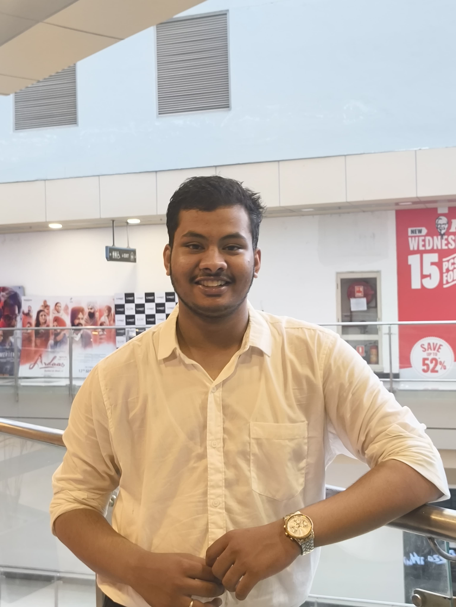

About Me
I am a first-year B.Tech Computer Science student at Dronacharya College of Engineering, specializing in Artificial Intelligence and Machine Learning. Ever since I discovered the power of technology, I’ve been deeply fascinated by the potential of AI to solve complex problems and make a meaningful impact in various fields. My curiosity and passion drive me to learn and explore new technologies, focusing on how algorithms and data can be used to create intelligent systems.
Outside of academics, I am an avid cricket player and a passionate technology enthusiast. Playing cricket has taught me the importance of teamwork, strategy, and perseverance—skills I apply in every aspect of my life. My long-term goal is to become a well-rounded AI developer, contributing to projects that are not only technically sound but also socially responsible and ethical. I am excited to continue this journey, learn from others, and apply my skills to create solutions that improve lives and contribute to the advancement of technology.
Skills
- ✅ Expertise in HTML & CSS for crafting responsive, modern web layouts
- ✅ Proficient in Python programming with a focus on Machine Learning frameworks
- ✅ Working knowledge of Java for object-oriented programming
- ✅ Foundational skills in C/C++ for system-level programming
- ✅ Competent in MySQL for database management and queries
- 💻 Programming Languages:
- Python, C, C++, HTML, CSS, JavaScript (basic)
- ⚙️ Tools & Technologies:
- Git & GitHub, VS Code, Jupyter Notebook, Flask, Figma (basic UI design)
- 📊 AI/ML & Data:
- NumPy, Pandas, Matplotlib, Scikit-learn (beginner), Data Visualization
- 🌐 Web Development: Responsive design, Basic frontend development, Flask (beginner backend)
- 🔧 Other Skills:
- Problem-solving, Team collaboration, Quick learner, Public speaking
Projects
AI-Powered College Semester Question Paper Predictor (Preddy)
A full-stack web application using AI to predict upcoming semester question papers. The system analyzes past question papers and employs machine learning algorithms to forecast potential questions for exams.
Technologies: Flask, HTML, CSS, JavaScript, Machine Learning, SQL/NoSQL
Explore on GitHub / DemoPersonal Portfolio Website
A sleek, fully responsive portfolio website designed to showcase my projects, skills, and professional journey with a modern aesthetic.
Technologies: HTML, CSS, JavaScript
Explore on GitHub / DemoUltra Low-Cost AI-Powered Power Press Safety System
An AI-powered safety system for manual power press machines to prevent hand injuries. Using low-cost sensors, the system detects when hands are in the danger zone and triggers alerts. The device is coin-sized and can be easily installed in the die area, making it cost-effective for small-scale factories.
Technologies: Arduino/ESP32, Sensors (IR, Pressure), C/C++, Machine Learning
Explore on GitHub / DemoEducation
Institution: Dronacharya College of Engineering, Gurugram
Program: Bachelor of Technology (B.Tech) in Computer Science (Artificial Intelligence & Machine Learning)
Duration: 2024 - 2028 (Expected)
Key Coursework:
- Data Structures and Algorithms
- Machine Learning
- Web Development
- Database Management Systems
- Artificial Intelligence
- Object-Oriented Programming
- Linear Algebra for AI
Secondary Education
School: St.Michael Senior Secondary School Gurugram
Board: CBSE
Grade: 12th (Higher Secondary)
Duration: 2024
Major Subjects:
- Physics
- Chemistry
- Mathematics
- Computer Science
- English
Grade/Percentage: 82%
Pre-Secondary Education
School: LT.Atul Katarya Memorial School Gurugram
Board: ICSE
Grade: 10th
Duration: 2022
Major Subjects:
- Science
- Social Studies
- Mathematics
- Physical Education
- English
Grade/Percentage: 95 %
Testimonials
"Akash’s dedication and passion for AI/ML projects are truly commendable. His innovative thinking adds great value to any team." - Professor Smith
"Collaborating with Akash was a rewarding experience. His technical skills and problem-solving abilities stand out." - Classmate Aaditya Asthana
Contact
I'm open to exciting opportunities and collaborations. Feel free to reach out through email or connect with me on LinkedIn and GitHub.